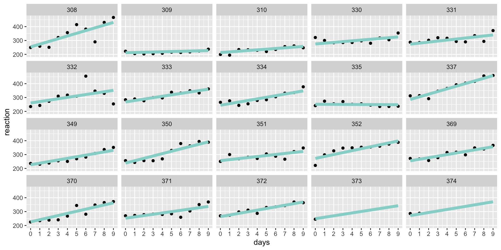
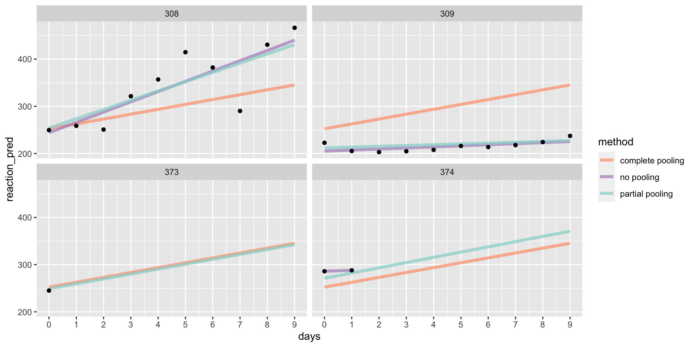

Multilevel Modelling
2023-04-28
Overview
Today’s session is on multilevel modelling:
Understanding when multilevel models are necessary and the benefits to using multilevel models by default even when single-level models suffice.
How multilevel models are extensions to single-level models (e.g. linear regression) and the implications of model structure.
The difference between fixed and random effects, and crossed/nested random effects, and when random intercepts and slopes are necessary.
The importance of partial pooling/shrinkage/regularisation on model estimates.
Getting Started
Click
Code> Download ZIP.Unzip the files.
Open the file
ds-psych_course.RProjCreate a Quarto document and save it within
07_mixed-effects-models. Name it anything you like.
You can copy the code form here on out and everything should work.
Loading Packages
Load our essential packages, tidyverse for data wrangling and presentation and here for working with file paths. The core packages today are lme4 for mixed effects models and afex which builds on lme4 but adds more functionality.
We also use emmeans for estimated marginal means and pairwise tests, and easystats for its child packages effectsize for getting effect sizes and performance for calculating intraclass-correlation coefficients.
The Data
We’ll use the sleepstudy data set from lme4 which has reaction times of subjects who were deprived of sleep over several days, getting only 3 hours of sleep each day.
The Data
Plotting the Data
There is some trend going on.
Modelling the Data
We want to estimate the mean effect of sleep deprivation on reaction times.
An Initial Attempt
One approach you might think to use is a linear model, with:
\[ \begin{aligned} RT_{subj, days} = \alpha + \beta Days_{subj, days} + e_{subj, days}\\ e_{subj, days} \sim \mathcal{N}(0, \sigma^2) \end{aligned}\]
Or equivalently with:
\[ \begin{aligned} RT_{subj, days} \sim \mathcal{N}(\mu_{subj, days}, \sigma^2)\\ \mu_{subj, days} = \alpha + \beta Days_{subj, days}\\ \end{aligned} \]
Complete Pooling
- But, we need to be wary of the assumptions we encode in this model.
Assumptions
❌ Residual errors are independent.
❌ Sleep deprivation has the same impact for each participant.
Fit the Model
We appear to have an effect whereby reaction times increase as days without sleep increase.
Call:
lm(formula = reaction ~ days, data = sleepstudy)
Residuals:
Min 1Q Median 3Q Max
-110.646 -27.951 1.829 26.388 139.875
Coefficients:
Estimate Std. Error t value Pr(>|t|)
(Intercept) 252.321 6.406 39.389 < 2e-16 ***
days 10.328 1.210 8.537 5.48e-15 ***
---
Signif. codes: 0 '***' 0.001 '**' 0.01 '*' 0.05 '.' 0.1 ' ' 1
Residual standard error: 47.43 on 181 degrees of freedom
Multiple R-squared: 0.2871, Adjusted R-squared: 0.2831
F-statistic: 72.88 on 1 and 181 DF, p-value: 5.484e-15Model Predictions
Not great!
Changing Assumptions
We know that participants might start off with different reaction times (i.e. different intercepts) and for them to respond differently to sleep deprivation (i.e. different slopes).
Let’s estimate an average reaction time and the impact of sleep deprivation on reaction time for each subject.
An Alternative Model
We can model an intercept, slope, and intercepts and slopes by subjects with:
\[ \begin{aligned} RT_{subj, days} = \alpha + \beta Days_{days} + \beta Subject_{subj} + \beta Days_{days} \cdot Subject_{subj} + e_{subj, days}\\ e_{subj, days} \sim \mathcal{N}(0, \sigma^2) \end{aligned}\]
Or equivalently with:
\[ \begin{aligned} RT_{subj, days} \sim \mathcal{N}(\mu_{subj, days}, \sigma^2)\\ \mu_{subj, days} = \alpha + \beta Days_{days} + \beta Subject_{subject} + \beta Days_{days} \cdot Subject_{subj}\\ \end{aligned} \]
No Pooling
- But, we need to be wary of the assumptions we encode in this model.
Assumptions
✅ Residual errors are independent.
✅ Sleep deprivation has a different impact for each participant.
❌ Knowledge of the sample does not help with estimating the individual.
Nominal Variables
By default, numeric variables are treated as continuous.
subjectis numeric, but is not continuous. It should be nominal.If we treat
subjectas continuous we implicitly assume going from participantHowever, if we add subject as a continuous variable to our model we will assume that the difference between participants is linear, additive, and equally spaced.
So, we assume the difference between participants 308 and 309 is the same as between participants 309 and 310, which it probably isn’t, amongst other weird things. So treat it as a
factor.
Fit the Model
no_pooling_mod <- lm(
reaction ~ 1 + days + subject + days:subject,
data = sleepstudy
)
summary(no_pooling_mod)
Call:
lm(formula = reaction ~ 1 + days + subject + days:subject, data = sleepstudy)
Residuals:
Min 1Q Median 3Q Max
-106.40 -10.55 0.00 11.17 132.51
Coefficients: (1 not defined because of singularities)
Estimate Std. Error t value Pr(>|t|)
(Intercept) 252.8146 3.6683 68.920 < 2e-16 ***
days 10.0216 2.0061 4.996 1.67e-06 ***
subject1 -8.6219 14.7337 -0.585 0.559341
subject2 -47.7596 14.7337 -3.242 0.001477 **
subject3 -49.3304 14.7337 -3.348 0.001038 **
subject4 36.8705 14.7337 2.502 0.013451 *
subject5 32.9244 14.7337 2.235 0.026982 *
subject6 11.4370 14.7337 0.776 0.438876
subject7 22.2045 14.7337 1.507 0.133988
subject8 -12.6517 14.7337 -0.859 0.391940
subject9 10.2201 14.7337 0.694 0.489018
subject10 37.2895 14.7337 2.531 0.012452 *
subject11 -37.7028 14.7337 -2.559 0.011531 *
subject12 -26.9800 14.7337 -1.831 0.069142 .
subject13 8.3324 14.7337 0.566 0.572591
subject14 23.5575 14.7337 1.599 0.112039
subject15 2.1536 14.7337 0.146 0.883996
subject16 -42.3655 14.7337 -2.875 0.004648 **
subject17 0.8214 14.7337 0.056 0.955616
subject18 14.2302 14.7337 0.966 0.335751
subject19 -7.8146 24.5541 -0.318 0.750748
days:subject1 11.7431 3.3358 3.520 0.000577 ***
days:subject2 -7.7599 3.3358 -2.326 0.021400 *
days:subject3 -3.9067 3.3358 -1.171 0.243466
days:subject4 -7.0136 3.3358 -2.103 0.037247 *
days:subject5 -4.7556 3.3358 -1.426 0.156135
days:subject6 -0.4549 3.3358 -0.136 0.891726
days:subject7 -0.8796 3.3358 -0.264 0.792399
days:subject8 2.2315 3.3358 0.669 0.504591
days:subject9 -12.9027 3.3358 -3.868 0.000166 ***
days:subject10 9.0043 3.3358 2.699 0.007780 **
days:subject11 3.4723 3.3358 1.041 0.299654
days:subject12 9.4824 3.3358 2.843 0.005125 **
days:subject13 -3.5881 3.3358 -1.076 0.283880
days:subject14 3.5449 3.3358 1.063 0.289698
days:subject15 1.3265 3.3358 0.398 0.691477
days:subject16 8.0345 3.3358 2.409 0.017278 *
days:subject17 -0.8332 3.3358 -0.250 0.803117
days:subject18 1.2764 3.3358 0.383 0.702543
days:subject19 NA NA NA NA
---
Signif. codes: 0 '***' 0.001 '**' 0.01 '*' 0.05 '.' 0.1 ' ' 1
Residual standard error: 25.59 on 144 degrees of freedom
Multiple R-squared: 0.8348, Adjusted R-squared: 0.7913
F-statistic: 19.16 on 38 and 144 DF, p-value: < 2.2e-16Model Predictions
Better, but we can’t make good predictions from subjects 373 and 374.
Changing Assumptions
We’d like to estimate the mean effect of sleep deprivation on reaction times.
We know that participants might start off with different reaction times (i.e. different intercepts) and for them to respond differently to sleep deprivation (i.e. different slopes).
We’d like individual intercepts and slopes to contribute to our mean estimates.
We’d like to use the mean estimates to regularise the estimates for each individual.
The Best of Both?
\[ \begin{aligned} RT_{subj, days} = \alpha_{subj} + \beta_{subj}Days_{subj, days} + e_{subj, days}\\ \alpha_{subj} = \alpha + S_{0, subj}\\ \beta_{subj} = \beta + S_{1, subj}\\ \begin{bmatrix} \alpha_{subj} \\ \beta_{subj} \end{bmatrix} \sim \mathcal{N}(\begin{bmatrix} 0, 0 \end{bmatrix}, \Sigma)\\ \Sigma = \begin{pmatrix} \tau_{0}^2, \rho_{\tau_{0}\tau_{1}} \\ \rho_{\tau_{0}\tau_{1}}, \tau_{1} \end{pmatrix}\\ \\ e_{subj, days} \sim \mathcal{N}(0, \sigma^2) \end{aligned} \]
Partial Pooling
Are these assumptions appropriate?
Assumptions
✅ Residual errors are independent, even with repeated observations per subject.
✅ There is an average reaction time (intercept) and effect of sleep deprivation on reaction time (slope).
✅ Subjects’ average reaction times are offset from the average.
✅ Effects of sleep deprivation on subjects varies around the average.
✅ Average reaction times and effects of sleep deprivation are correlated within subjects.
✅ Knowledge of the sample helps with estimating the individual.
Fit the Model
partial_pooling_mod <- lmer(
reaction ~ days + (1 + days | subject),
data = sleepstudy
)
summary(partial_pooling_mod)Linear mixed model fit by REML. t-tests use Satterthwaite's method [
lmerModLmerTest]
Formula: reaction ~ days + (1 + days | subject)
Data: sleepstudy
REML criterion at convergence: 1771.4
Scaled residuals:
Min 1Q Median 3Q Max
-3.9707 -0.4703 0.0276 0.4594 5.2009
Random effects:
Groups Name Variance Std.Dev. Corr
subject (Intercept) 582.72 24.140
days 35.03 5.919 0.07
Residual 649.36 25.483
Number of obs: 183, groups: subject, 20
Fixed effects:
Estimate Std. Error df t value Pr(>|t|)
(Intercept) 252.543 6.433 19.295 39.257 < 2e-16 ***
days 10.452 1.542 17.163 6.778 3.06e-06 ***
---
Signif. codes: 0 '***' 0.001 '**' 0.01 '*' 0.05 '.' 0.1 ' ' 1
Correlation of Fixed Effects:
(Intr)
days -0.137Model Predictions
Comparing Methods
Zooming In
Note that the partially-pooled results are regularised.
Understanding Mixed Effects Models
Understanding the Model Formula
In the formula y ~ 1 + x + (1 + x | id) we get estimates for:
a fixed effect estimate for the intercept
a fixed effect estimate for the slope,
xa random intercept for each
id(i.e. offsets for eachid).a random slope for each
xwithin id (i.e. offsets for eachid).a correlation between the random intercepts and slopes.
Fixed and Random Effects
Fixed effects typically contain all possible levels of a factor in a study/experiment.
Random effects are often a random sample of the possible levels.
We usually want to generalise our findings beyond the groups for random effects.
Any time something we have some categorical variable with an index that’s exchangeable, e.g. participant IDs, we should pool information for this variable, keeping it as a random effect grouping factor.
Understanding Random Effects Structures
Random Intercepts
Linear mixed model fit by REML. t-tests use Satterthwaite's method [
lmerModLmerTest]
Formula: reaction ~ 1 + days + (1 | subject)
Data: sleepstudy
REML criterion at convergence: 1815.4
Scaled residuals:
Min 1Q Median 3Q Max
-3.2361 -0.5406 0.0143 0.5204 4.2699
Random effects:
Groups Name Variance Std.Dev.
subject (Intercept) 1296 36.00
Residual 952 30.85
Number of obs: 183, groups: subject, 20
Fixed effects:
Estimate Std. Error df t value Pr(>|t|)
(Intercept) 252.5777 9.1033 26.1095 27.75 <2e-16 ***
days 10.4319 0.7963 165.2122 13.10 <2e-16 ***
---
Signif. codes: 0 '***' 0.001 '**' 0.01 '*' 0.05 '.' 0.1 ' ' 1
Correlation of Fixed Effects:
(Intr)
days -0.367Random Slopes
Linear mixed model fit by REML. t-tests use Satterthwaite's method [
lmerModLmerTest]
Formula: reaction ~ 1 + days + (0 + days | subject)
Data: sleepstudy
REML criterion at convergence: 1794.5
Scaled residuals:
Min 1Q Median 3Q Max
-3.5174 -0.5661 0.0499 0.6140 4.6109
Random effects:
Groups Name Variance Std.Dev.
subject days 52.67 7.257
Residual 837.90 28.947
Number of obs: 183, groups: subject, 20
Fixed effects:
Estimate Std. Error df t value Pr(>|t|)
(Intercept) 252.296 3.911 164.168 64.504 < 2e-16 ***
days 10.414 1.864 21.609 5.587 1.37e-05 ***
---
Signif. codes: 0 '***' 0.001 '**' 0.01 '*' 0.05 '.' 0.1 ' ' 1
Correlation of Fixed Effects:
(Intr)
days -0.337Uncorrelated Random Intercepts and Slopes
u_is_mod <- lmer(
reaction ~ 1 + days + (1 | subject) + (0 + days | subject),
data = sleepstudy
)
summary(u_is_mod)Linear mixed model fit by REML. t-tests use Satterthwaite's method [
lmerModLmerTest]
Formula: reaction ~ 1 + days + (1 | subject) + (0 + days | subject)
Data: sleepstudy
REML criterion at convergence: 1771.5
Scaled residuals:
Min 1Q Median 3Q Max
-3.9806 -0.4673 0.0250 0.4589 5.2083
Random effects:
Groups Name Variance Std.Dev.
subject (Intercept) 598.14 24.46
subject.1 days 35.88 5.99
Residual 647.89 25.45
Number of obs: 183, groups: subject, 20
Fixed effects:
Estimate Std. Error df t value Pr(>|t|)
(Intercept) 252.550 6.491 20.635 38.906 < 2e-16 ***
days 10.439 1.556 18.254 6.708 2.54e-06 ***
---
Signif. codes: 0 '***' 0.001 '**' 0.01 '*' 0.05 '.' 0.1 ' ' 1
Correlation of Fixed Effects:
(Intr)
days -0.184Correlated Random Intercepts and Slopes
Linear mixed model fit by REML. t-tests use Satterthwaite's method [
lmerModLmerTest]
Formula: reaction ~ 1 + days + (1 + days | subject)
Data: sleepstudy
REML criterion at convergence: 1771.4
Scaled residuals:
Min 1Q Median 3Q Max
-3.9707 -0.4703 0.0276 0.4594 5.2009
Random effects:
Groups Name Variance Std.Dev. Corr
subject (Intercept) 582.72 24.140
days 35.03 5.919 0.07
Residual 649.36 25.483
Number of obs: 183, groups: subject, 20
Fixed effects:
Estimate Std. Error df t value Pr(>|t|)
(Intercept) 252.543 6.433 19.295 39.257 < 2e-16 ***
days 10.452 1.542 17.163 6.778 3.06e-06 ***
---
Signif. codes: 0 '***' 0.001 '**' 0.01 '*' 0.05 '.' 0.1 ' ' 1
Correlation of Fixed Effects:
(Intr)
days -0.137Comparing Methods

When to Include Parameters in Random Effects
Keep it Maximal
Barr et al. (2013) show that the maximal random effects structure justified by the design protects against Type-I and Type-II errors.
Random intercepts should be present for random/exchangeable factors, e.g. subjects and items.
Random slopes for repeated observations within a unit, e.g. within-subjects or within-items effects. Introduce the highest-order interaction and all lower order terms that are within-unit.
No random slopes for non-repeated observations within a unit, e.g. between-subjects or between-items effects.
Keeping it Maximal
We are interested in predicting the outcome y from x and have several subjects who took part in our study.
Where
xis between-subjects:y ~ x + (1 | subject).where
xis within-subjects but we only have one observation per level ofx:y ~ x + (1 | subject).where
xis within-subjects but we have more than one observation per level ofx:y ~ x + (1 + x | subject).
Parsimonious Mixed Effects Models
Matuschek et al. (2017) instead argue that we should retain random slopes that are justified by the design only if they contribute enough to explaining the variance in the model. They argue this gives a better balance between Type-I error and power.
Use a similar method to introduce random intercepts and slopes as in Barr et al. (2013).
Evaluate the impact of adding/removing random slopes on the amount of variance explained by the model.
Compare the impact of random effects through model comparison.
Crossed Random Effects
Analysing Subjects and Items
Aggregating participant-by-trial level data by participants treats the items as a fixed effect.
This assumes the items in your study are the only ones of interest and you don’t want to generalise to new items.
This has been a known problem in psycholinguistics since the 1970s, where we used F1/F2 analyses: effects are only significant if they come up significant in tests of data aggregated by subjects and items.
Separate by-subjects and by-items analyses are still problematic in terms of error rates.
Using Crossed Random Effects
We can specify crossed random effects of subjects and items (or any other unit) by adding additional random effects components to the model. Minimally:
y ~ x + (1 | subject) + (1 | item)
The random slopes still matter here. So, if x is within-subjects but not within-items, our formula would look like:
y ~ x + (1 + x | subject) + (1 | item)
If it’s within both, it would be:
y ~ x + (1 + x | subject) + (1 + x | item)
Nested Random Effects
Sometimes your data are hierarchical, such that observational units are nested within higher units. For example, students are nested within classes and schools.
Accounting for unique effects of classes and schools on individuals is needed.
Using Nested Random Effects
If you have data with shared identifiers for e.g. students and classes, but unique identifiers for schools, e.g.:
# A tibble: 6 × 5
student class school intervention outcome
<int> <int> <dbl> <chr> <dbl>
1 1 1 1 yes 204.
2 2 2 1 no 217.
3 3 3 1 yes 233.
4 4 4 1 no 231.
5 5 5 1 yes 215.
6 6 1 2 no 193.The appropriate formula is y ~ 1 + intervention + (1 | school/class/student).
Using Unique Codes
If instead you add a unique identifier for students and classes, e.g.
# A tibble: 6 × 6
student class school intervention outcome class_id
<int> <int> <dbl> <chr> <dbl> <chr>
1 1 1 1 yes 204. 1_1
2 2 2 1 no 217. 1_2
3 3 3 1 yes 233. 1_3
4 4 4 1 no 231. 1_4
5 5 5 1 yes 215. 1_5
6 6 1 2 no 193. 2_1 You can use crossed random effects like:
y ~ 1 + intervention + (1 | school) + (1 | class_id)When Models Break Down
Non-Convergence and Singularity
Often, trying to fit the maximal model results in non-convergence or a singular fit.
With maximum likelihood estimation the model can sometimes not settle (converge) on a reliable estimate.
Sometimes your variance-covariance matrix has perfectly correlations (e.g. -1 or 1) or variances that are practically 0.
In either case you should try (1) a different optimiser for getting estimates, (2) increasing iterations before settling on an estimate, or (3) reducing complexity in your random effects.
Optimisers
The default optimiser in lme4 is nloptwrap. Try Nelder_Mead or bobyqa instead.
Note, for generalised models fitted with glmer() you need to use control = glmerControl().
Iterations
To increase the number of iterations before settling on estimates, again use the control options.
Reducing Model Complexity
Some heuristics can be helpful here, including:
- Correlations between random effects, especially with many interactions, can be difficult to estimate. Suppress them with:
y ~ x + z (1 + x * z || subject).
Note
The double bar notation only works in lme4::lmer() with numeric predictors. Either expand your formula manually, e.g. `y ~ x + z (1 | subject) + (0 + x | subject) + (0 + z | subject) + (0 + x:z | subject)` or use numeric codes to use the double bar notation. Otherwise, use afex::mixed() which allows double bar notation with factors.
Reducing Model Complexity
Next, higher-order interactions usually soak up less variance than lower-order interactions. Remove the highest-order interactions from random slopes before moving down.
Remove slopes before intercepts.
Assuming you’ve conducted an experiment with tight control on your items, items will usually soak up less variance than subjects. So, reduce the random effects structure on items before subjects.
Evaluating Evidence in Mixed Effects Models
Inference can be more complicated than using a traditional ANOVA. However, there are a few methods to get main effects and interactions.
Parameter Estimates/Contrasts
If your factors only have two levels, then you can look directly at the parameter estimates for main effects if you use sum-to-zero coding (e.g. -1/1 or -.5/.5) for factors.
Parameter Estimates/Contrasts
Look at the t and/or p-values in the parameter estimates table.
Linear mixed model fit by REML. t-tests use Satterthwaite's method [
lmerModLmerTest]
Formula: log_rt ~ 1 + stimulus + (1 + stimulus | id) + (1 | item)
Data: fhch2010
REML criterion at convergence: 7833.1
Scaled residuals:
Min 1Q Median 3Q Max
-6.0778 -0.6049 -0.1080 0.4828 5.5021
Random effects:
Groups Name Variance Std.Dev. Corr
item (Intercept) 0.003715 0.06095
id (Intercept) 0.048958 0.22126
stimulus1 0.006211 0.07881 0.30
Residual 0.100291 0.31669
Number of obs: 13222, groups: item, 600; id, 45
Fixed effects:
Estimate Std. Error df t value Pr(>|t|)
(Intercept) -0.07535 0.03319 44.50566 -2.270 0.0281 *
stimulus1 -0.08443 0.01232 47.79799 -6.851 1.27e-08 ***
---
Signif. codes: 0 '***' 0.001 '**' 0.01 '*' 0.05 '.' 0.1 ' ' 1
Correlation of Fixed Effects:
(Intr)
stimulus1 0.284 Likelihood Ratio Tests (LRT)
If your factors have more than 2 levels, you can look for main effects using likelihood ratio tests. Only two models can be compared at once, so forward or backward selection is needed.
stim_mod_0 <- lmer(log_rt ~ 1 + (1 + stimulus | id) + (1 | item), data = fhch2010)
anova(stim_mod_0, stim_mod)Data: fhch2010
Models:
stim_mod_0: log_rt ~ 1 + (1 + stimulus | id) + (1 | item)
stim_mod: log_rt ~ 1 + stimulus + (1 + stimulus | id) + (1 | item)
npar AIC BIC logLik deviance Chisq Df Pr(>Chisq)
stim_mod_0 6 7866.2 7911.2 -3927.1 7854.2
stim_mod 7 7835.1 7887.5 -3910.5 7821.1 33.131 1 8.614e-09 ***
---
Signif. codes: 0 '***' 0.001 '**' 0.01 '*' 0.05 '.' 0.1 ' ' 1Note that BIC and AIC are alternatives to LRT.
ANOVA
You can use the built-in ANOVA function. When combined with lmerTest or afex packages, this gets type-III sums of squares and Satterhwaite’s method for calculating the p-value.
Caution
Type-III sums of squares are only appropriate with orthogonal contrasts, such as sum-to-zero coding. Only interpret these values if you use this coding strategy.
Marginal Predictions and Tests
These work just like in regular models we’ve explored in the core statistics lessons. Check out emmeans::emmeans() and emmeans::pairs() for estimated marginal means and pairwise tests.
Non-Linear Models
Generalised Linear Mixed Effects Models
These work just like the regular general linear models we’ve covered in core statistics. However, instead of using lme4::lmer() we would use lme4::glmer(). As before, we need a likelihood and link function defined in the model call.
Exercises
Please complete the exercises at https://github.com/gpwilliams/ds-psych_course.